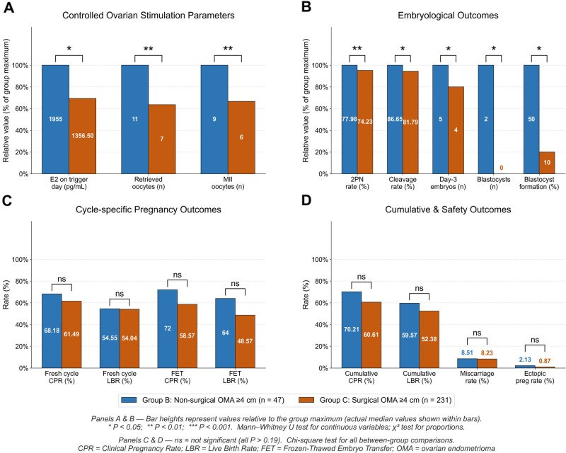

1605 — Endometrioma trước khi mang thai: mổ dự phòng hay theo dõi? / Ovarian endometrioma before pregnancy — prophylactic surgery or surveillance?
Tags: pattern:nang-t1-sang pattern:lac-noi-mac vung:buong-trung vung:thai-ky protocol:TVUS protocol:MRI-chau incidentaloma:nang-buong-trung
Mức chắc chắn (certainty): tổng hợp y văn (literature synthesis) — khuyến cáo ESHRE 2022 (mức mạnh) + đoàn hệ IVF 394 ca + đoàn hệ thai kỳ 208 ca + tổng quan 20 ca vỡ nang trong thai. Đây là chủ đề chưa có thử nghiệm ngẫu nhiên, nên các con số là bằng chứng quan sát.
1. Tổng quan bệnh học – cơ chế hình ảnh
- Vấn đề: nang lạc nội mạc buồng trứng (endometrioma) gặp ở 17–44% phụ nữ có lạc nội mạc tử cung (PMC13671997); đa số không triệu chứng và được phát hiện khi siêu âm trước khi mong con. Câu hỏi thực hành: mổ bóc nang trước khi mang thai hay theo dõi?
- Hai mặt của một đồng xu:
- Mổ bóc nang (cystectomy) làm giảm đau, giảm tái phát, có mô bệnh — nhưng giảm dự trữ buồng trứng: AMH giảm ~38%, chênh lệch trung bình có trọng số −1,13 ng/mL (95% CI −1,88 đến −0,37) (meta-analysis 8 đoàn hệ, dẫn trong PMC10455819; chi tiết ở bài 585).
- Theo dõi giữ được mô lành nhưng vẫn có nguy cơ vỡ, xoắn, tái phát và không loại trừ được ác tính.
- TẠI SAO hình ảnh quyết định được (vật lý):
- T1W rất sáng, không mất khi fat-sat: dịch nang là máu cũ cô đặc (methemoglobin/hemosiderin + protein), không phải mỡ. Đây là điểm phân biệt với u quái trưởng thành (mỡ → mất tín hiệu khi fat-sat).
- T2W "shading" (bóng mờ): nồng độ sắt–protein cao rút ngắn T2 → tín hiệu trung gian/thấp, khác nang cơ năng (T2 rất sáng).
- Siêu âm: "ground glass" (kính mờ) — echo dày đều, không có thành phần đặc; không có tưới máu bên trong trên Doppler. Nhú thật (true nodule) thì khác: có mạch, bờ không đều.
- DWI: dịch máu cũ không hạn chế khuếch tán (không sáng trên DWI/không tối trên ADC); mô đặc nghi ác thì hạn chế.
- Ngưỡng định lượng cần nhớ khi tư vấn:
- Vỡ nang trong thai kỳ: trong 20 ca được tổng quan, 78,5% nang ≥ 6 cm, 50% xảy ra tam cá nguyệt 3, tất cả ca ≥ 32 tuần đều phải mổ lấy thai (PMC12916156). Đây là lý do "nang to" được cân nhắc mổ dù nguy cơ tuyệt đối rất thấp.
- Tái phát sau mổ: 21,5% ở 2 năm, 40–50% ở 5 năm (bài 584).
- Mổ trước IVF không cải thiện tỷ lệ sinh sống tích lũy: 52,4% (mổ) vs 59,6% (không mổ) ở nang ≥ 4 cm, adjusted OR 0,77 (95% CI 0,38–1,56); AMH 1,98 vs 3,16 ng/mL, số noãn thu được 7 vs 11 (PMC13472831, 394 ca).
- Mổ trước mang thai làm giảm nhau tiền đạo: 8,5% vs 23,4% (p = 0,020; OR 0,32; 95% CI 0,11–0,90) — nhưng lợi ích này mất đi nếu mang thai > 2 năm sau mổ (20,0% vs 2,4% khi mang thai trong vòng 2 năm) (PMC8986974, 208 thai).
- Khuyến cáo ESHRE 2022 (mức mạnh): không mổ thường quy endometrioma trước hỗ trợ sinh sản (ART) để cải thiện tỷ lệ sinh sống, vì lợi ích không chứng minh được còn tác hại lên dự trữ buồng trứng là có thật. Mổ có thể cân nhắc để giảm đau do lạc nội mạc; khi mổ thì bóc nang được ưu tiên hơn chọc hút/đốt (ESHRE 2022, khuyến cáo mạnh).
2. Mẫu hình + chẩn đoán phân biệt theo kích thước, triệu chứng và kế hoạch sinh sản (Gamut)
Năm câu hỏi theo thứ tự — trả lời xong mới quyết định:
- Có chỉ định mổ tuyệt đối không? (nghi ác, xoắn, áp-xe, đau kháng trị, tăng nhanh, hình ảnh không điển hình).
- Nang bao nhiêu cm? (< 4 cm / 4–6 cm / ≥ 6 cm).
- AMH và tuổi? (AMH < 1,1 ng/mL = suy giảm dự trữ buồng trứng — bài 585; > 35 tuổi là yếu tố tiên lượng giảm mạnh).
- Kế hoạch sinh sản: thụ thai tự nhiên, IVF ngay, hay IVF sau 6–12 tháng?
- Có đau/đau sâu/DIE kèm theo không? (mổ vì đau là chỉ định khác với mổ vì nang).
Gamut theo kích thước – bối cảnh:
- < 4 cm, không triệu chứng, AMH bình thường: theo dõi + điều trị nội tiết nếu đau; không mổ (ESHRE 2022).
- 4–6 cm, mong con tự nhiên: theo dõi là lựa chọn mặc định; mổ nếu đau nhiều, thất bại điều trị nội tiết, hoặc bệnh nhân ưu tiên giảm nguy cơ biến chứng thai kỳ sau khi được tư vấn đầy đủ.
- ≥ 6 cm: nhóm có 78,5% ca vỡ trong thai kỳ thuộc nhóm này (PMC12916156) → thảo luận mổ trước khi mang thai, đặc biệt nếu IVF (kiểm soát được thời điểm).
- AMH < 1,1 ng/mL hoặc nang hai bên: tránh mổ nếu không có chỉ định tuyệt đối; ưu tiên theo dõi, cân nhắc trữ noãn/phôi trước nếu vẫn phải mổ.
- Nghi ác / nhú thật có mạch / thành dày không đều: mổ + mô bệnh, không chờ.
- Đã có thai: xử trí theo bài 583 (decidualization giả ác, vỡ – xoắn) — không áp dụng logic "mổ dự phòng" ở đây nữa.
3. Bảng so sánh phân biệt (ma trận đối chiếu)
| Chiến lược (entity) | Hình ảnh / dữ liệu điển hình | Chốt vào (rule-in) | Chốt loại (rule-out) | Gợi ý xác nhận |
|---|---|---|---|---|
| Theo dõi (surveillance) | Nang "ground glass", T1 sáng không mất fat-sat, T2 shading, không nhú có mạch | Nang < 4 cm + không đau nhiều + AMH bình thường + chưa cần IVF gấp | Nang ≥ 6 cm, nhú thật có mạch, đau kháng trị, tăng nhanh → không theo dõi đơn thuần | TVUS + AMH mỗi 6–12 tháng |
| Mổ bóc nang trước mang thai | Nang ≥ 4–6 cm; có thể kèm DIE | Đau kháng trị / nang ≥ 6 cm / nghi ác / cần mô bệnh | AMH < 1,1 ng/mL + nang hai bên → cân nhắc kỹ thuật khác hoặc trữ noãn trước | MRI trước mổ; AMH nền; mô bệnh |
| Đốt/xơ hóa (ablation, sclerotherapy) | Nang đơn thuần, không nghi ác | Muốn giữ mô lành, nang tái phát nhiều lần | Không có mô bệnh → loại khi nghi ác | Siêu âm theo dõi; AMH sau 3–6 tháng |
| Đi thẳng IVF (không mổ) | Nang ≥ 4 cm + hiếm muộn + AMH thấp | Nang ≥ 4 cm không có chỉ định mổ tuyệt đối + AMH thấp (ESHRE 2022) | Có đau dữ dội, nang tăng nhanh, nghi ác → phải mổ trước | AMH, AFC, tư vấn CLBR |
| Nội tiết (OCP, dienogest, GnRH) | Giảm đau, giảm tái phát | Đau chu kỳ, chưa mong con ngay, sau mổ | Không dùng để "bảo vệ" AMH — AMH còn giảm 21–26%/6 tháng (bài 585) | Hỏi tiền sử huyết khối, đau nửa đầu |
| Giả u do decidualization (khi đã có thai) | Nhú bờ trơn, tín hiệu giống bánh nhau, ADC cao | Thai 11–13 tuần + nhú bờ trơn + ADC cao + không xâm lấn | Bờ gai, ADC thấp, dịch ổ bụng → nghi ác | MRI; theo dõi, không mổ (bài 583) |
4. Protocol chụp + quy trình quyết định
A. Đánh giá trước khi quyết định (1 buổi khám)
- TVUS + Doppler: kích thước 3 chiều (mm), số nang, một/hai bên, echo "ground glass", có nhú thật không, mạch trong nhú, dấu dính (sliding sign), nang "hôn nhau" (kissing ovaries).
- MRI tiểu khung (T1, T2, T1 fat-sat, DWI/ADC, ± gadolinium): xác nhận máu cũ, loại u quái, đánh giá DIE/ruột/niệu quản nếu đau sâu; đo thể tích nang và thể tích mô buồng trứng lành (chỉ số OEVI đang nghiên cứu — bài 585).
- AMH + AFC + FSH (AMH lấy bất kỳ ngày nào; 1 ng/mL = 7,14 pmol/L; ngưỡng DOR < 1,1 ng/mL).
- Đừng đo AMH ngay sau mổ: chờ 3–6 tháng vì AMH giảm sâu nhất trong giai đoạn này rồi có thể hồi phục một phần (bài 585).
B. Quy tắc tư vấn (điều quan trọng nhất của bài)
- Nói rõ sự thật của bằng chứng: mổ không làm tăng tỷ lệ sinh sống khi so với đi thẳng IVF (52,4% vs 59,6%; aOR 0,77; 0,38–1,56) và làm giảm AMH ~38%.
- Nói rõ lợi ích có thật: mổ giảm nhau tiền đạo (8,5% vs 23,4%) nếu mang thai trong vòng 2 năm sau mổ; quá 2 năm lợi ích mất (20,0% vs 2,4%).
- Nói rõ nguy cơ của theo dõi: vỡ nang trong thai 78,5% ở nang ≥ 6 cm, 50% ở tam cá nguyệt 3 — biến cố hiếm nhưng nặng (mổ cấp cứu, sinh non).
- Nói rõ nguy cơ của mổ: tái phát 21,5%/2 năm, 40–50%/5 năm; dính; giảm dự trữ không hồi phục ở nang hai bên.
- Ra quyết định theo giá trị của người bệnh — không có "đúng tuyệt đối"; ghi lại nội dung tư vấn.
C. Nếu chọn mổ — ba quy tắc thực hành
- Bóc nang, không đốt mù; hạn chế đốt cầm máu trên mô lành (thêm tổn thương buồng trứng).
- Trữ noãn/phôi trước mổ nếu AMH thấp, nang hai bên, hoặc > 35 tuổi.
- Mang thai trong vòng 2 năm sau mổ (nếu không, lợi ích giảm nhau tiền đạo mất đi).
D. Sơ đồ quyết định
flowchart TD
A[Endometrioma + mong con] --> B{Chỉ định mổ tuyệt đối: nghi ác, xoắn, đau kháng trị, tăng nhanh?}
B -->|Có| C[Mổ + mô bệnh; trữ noãn/phôi nếu AMH thấp]
B -->|Không| D{Đang đi IVF ngay?}
D -->|Có| E{Nang >= 4 cm và AMH thấp hoặc nang hai bên?}
E -->|Có| F[Đi thẳng IVF - ESHRE 2022: không mổ thường quy]
E -->|Không| G[Thảo luận mổ vs theo dõi theo giá trị người bệnh]
D -->|Không, thụ thai tự nhiên| H{Nang >= 6 cm?}
H -->|Có| I[Tư vấn nguy cơ vỡ 78,5% thuộc nhóm >= 6 cm; cân nhắc mổ trong 2 năm trước khi mang thai]
H -->|Không| J[Theo dõi + AMH 6-12 tháng + điều trị đau nếu cần]
G --> K[Quyết định chung; ghi lại tư vấn]
I --> K

394 ca IVF đầu tiên: nhóm không mổ (xanh, n = 47) vs mổ bóc nang trước đó (cam, n = 231) ở nang ≥ 4 cm. AMH và số noãn thấp hơn có ý nghĩa ở nhóm mổ, nhưng tỷ lệ sinh sống tích lũy không khác biệt (52,38% vs 59,57%, ns). Nguồn: Front Endocrinol 2026 (PMC13472831), CC BY 4.0.5. Biến thể bình thường và cạm bẫy
- Bẫy số 1 — "nang to thì phải mổ": nguy cơ vỡ tuyệt đối trong thai rất thấp; 78,5% ca vỡ thuộc nhóm ≥ 6 cm không có nghĩa mọi nang ≥ 6 cm sẽ vỡ. Đừng biến con số tương đối thành chỉ định tuyệt đối.
- Bẫy số 2 — đo AMH sai thời điểm: AMH giảm sâu nhất 1–3 tháng sau mổ, hồi phục một phần đến 12 tháng; đo ngay sau mổ sẽ đánh giá thấp dự trữ thật.
- Bẫy số 3 — nhú trong thai: từ 11–13 tuần, 16% (95% CI 8–29%) nang có phản ứng decidualization với nhú bờ trơn, ADC cao (thường 1,4–1,6 × 10⁻³ mm²/s); đây là sinh lý, không phải ung thư — mổ trong thai là sai lầm (bài 583).
- Bẫy số 4 — chọc hút/sclerotherapy không có mô bệnh: nếu hình ảnh không điển hình (nhú thật, thành dày, vách dày) thì không được dùng kỹ thuật không lấy bệnh phẩm.
- Bẫy số 5 — bỏ sót DIE: nang đơn độc trên siêu âm nhưng bệnh nhân đau sâu/đau khi giao hợp — cần MRI tìm DIE ruột/niệu quản; xử trí DIE khác hoàn toàn xử trí nang.
- Bẫy số 6 — tái phát không phải thất bại: tái phát 40–50% ở 5 năm là diễn tiến tự nhiên của bệnh, không phải "mổ hỏng" (bài 584).
- Biến thể bình thường: nang cơ năng/xuất huyết thoái triển sau 1–2 chu kỳ; đừng gắn nhãn endometrioma khi chưa lặp siêu âm (tối thiểu 2 chu kỳ).
6. Tự lượng giá — Blind Quiz
Ca 1 — Thai 28 tuần, đau bụng dữ dội đột ngột, có tiền sử endometrioma buồng trứng trái chưa mổ.

- Gợi ý: (A) siêu âm đầu dò, (B) CT bụng có cản quang, (C) siêu âm bụng.
- Câu hỏi: Dấu hiệu chính là gì? Chẩn đoán nào phải nghĩ trước tiên? Vì sao nang ≥ 6 cm là yếu tố nguy cơ?
Bấm để hiện đáp án (findings + chẩn đoán)
- Dấu hiệu: khối dịch – máu phức hợp sau tử cung, dịch tự do ổ bụng (đường nét đứt chỉ vị trí chảy máu), trên CT có vùng tăng đậm độ tương ứng máu đông.
- Chẩn đoán: vỡ endometrioma trong thai kỳ — biến cố hiếm, 50% ở tam cá nguyệt 3; 78,5% ca trong tổng quan có nang ≥ 6 cm.
- Xử trí: hồi sức + mổ cấp cứu (mổ lấy thai ± cắt phần phụ); tất cả ca ≥ 32 tuần trong tổng quan đều phải mổ lấy thai.
- Nguồn ảnh: Cureus 2026 (PMC12916156), Fig. 1 — CC BY 4.0.
Ca 2 — Thai 15 tuần, endometrioma 6 cm đã biết; siêu âm thấy "nhú" trong nang.

- Câu hỏi: Nhú này là dấu hiệu ác tính hay sinh lý? Dấu hiệu nào trên MRI giúp chốt?
Bấm để hiện đáp án (findings + chẩn đoán)
- Dấu hiệu: nang echo kính mờ (máu cũ), nhú bờ trơn, tròn đều, mạch vừa phải ở thành nang, không xâm lấn vỏ.
- Chẩn đoán: decidualization sinh lý của endometrioma trong thai — xuất hiện từ 11–13 tuần, gặp ở 16% nang; không phải ung thư.
- Chốt bằng MRI: nhú tín hiệu giống bánh nhau trên T2, ADC cao 1,4–1,6 × 10⁻³ mm²/s (T2 shine-through), không có bờ gai/xâm lấn.
- Xử trí: theo dõi, không mổ; nang thường nhỏ lại sau sinh (bài 583).
- Nguồn ảnh: Diagnostics 2023 (PMC10606809), Fig. 4 — CC BY 4.0.
Ca 3 — Tư vấn bằng số: bệnh nhân 33 tuổi, endometrioma 5 cm hai bên, AMH 0,9 ng/mL, đang chuẩn bị IVF.
- Câu hỏi: Dựa trên biểu đồ dưới đây và ESHRE 2022, bạn tư vấn mổ hay đi thẳng IVF? Nêu 2 con số để giải thích.
Bấm để hiện đáp án (findings + chẩn đoán)
- Trả lời: đi thẳng IVF là lựa chọn hợp lý. Hai con số: CLBR 52,4% vs 59,6%, aOR 0,77 (0,38–1,56) — không có lợi ích sinh sống; AMH 1,98 vs 3,16 ng/mL và 7 vs 11 noãn — mổ làm giảm dự trữ và hiệu quả kích thích.
- Thêm: AMH 0,9 ng/mL < 1,1 = suy giảm dự trữ; nang hai bên là yếu tố tiên lượng giảm AMH mạnh nhất → tránh mổ nếu không có chỉ định tuyệt đối.
- Nếu vẫn phải mổ: trữ noãn/phôi trước, và mang thai trong vòng 2 năm sau mổ.
- Nguồn ảnh: Front Endocrinol 2026 (PMC13472831), Fig. 3 — CC BY 4.0.
Bài liên quan chéo
- 583 – Nang lạc nội mạc trong thai kỳ: decidualization giả ác
- 584 – Dự phòng & theo dõi tái phát sau mổ endometrioma
- 585 – Endometrioma & dự trữ buồng trứng: AMH, bóc nang vs đốt
- 543 – Nang lạc nội mạc buồng trứng
- 530 – Buồng trứng: O-RADS siêu âm & MRI
- 1604 – Thai kỳ sau điều trị chửa ở sẹo mổ lấy thai
Ảnh
- Nguồn + giấy phép từng ảnh:
images/CREDITS.md(cả 3 ảnh đều CC BY 4.0). - Không tải ảnh từ nguồn paywall; AuntMinnie chỉ dẫn link.
Không dùng để chẩn đoán độc lập khi chưa có người hướng dẫn.